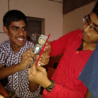
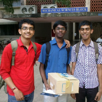
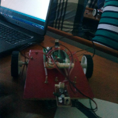

Line follower + Object Detection
In here we made a bot which could follow a line irrespective of its curvature. The program was fed into the arduino
via the computer. The function of the bot is to follow a line and stop when the line stops or an object is placed in the way.
There is a promiximity sensor used in order to detect the object.
Below is a gif showing the bot in action.

This was a part of the workshop conducted by Indian Institute of Technology(IIT) Madras at its Technofest, Shashtra 2013.
I was part of a 3 member team. This experience was definitely fun and thrilling.
Below are some of the pictures during the workshop


